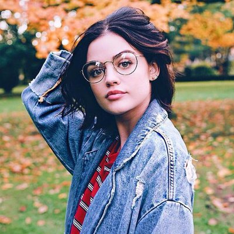

Im going to be a senior this fall. I hate waking up early
My idol is Lucy Hale.
My favorite quote from her is "People can advise you and people can help u to make a decision"
, but at the end of the day your left with yourself and I think that the inner voice is the strongest"
 News